Dwóch fotografów
Jeden fotograf pomaga gościom w pozowaniu i wykonuje zdjęcia. Drugi obrabia fotografie, drukuje je i obsługuje tablet z księgą gości. Dzięki temu wszystko działa sprawnie i bez długich kolejek.
Najlepsza atrakcja ślubna
Oferta late 2027/early 2028
Eleganckie, czarno-białe portrety Was i Waszych gości, tworzone, obrabiane i drukowane od razu podczas przyjęcia.
Wysłaliśmy link do tej strony na Twój adres e-mail, abyś mógł/mogła łatwo do niej wrócić. Jeśli nie widzisz wiadomości w skrzynce głównej, koniecznie sprawdź folder Spam lub Oferty.
Czym jest Fotostacja?
Fotostacja to usługa fotografowania czarno-białych portretów ślubnych, w której nie tylko para młoda, ale również goście są w centrum uwagi. To elegancka i ponadczasowa alternatywa dla standardowej fotobudki.
W ciągu 3 godzin pracy tworzymy profesjonalne portrety na białym tle, korzystając ze studyjnego oświetlenia. Zdjęcia od razu obrabiamy, zapisujemy w chmurze i drukujemy na miejscu, więc każdy może wyjść z wesela z gotową pamiątką.
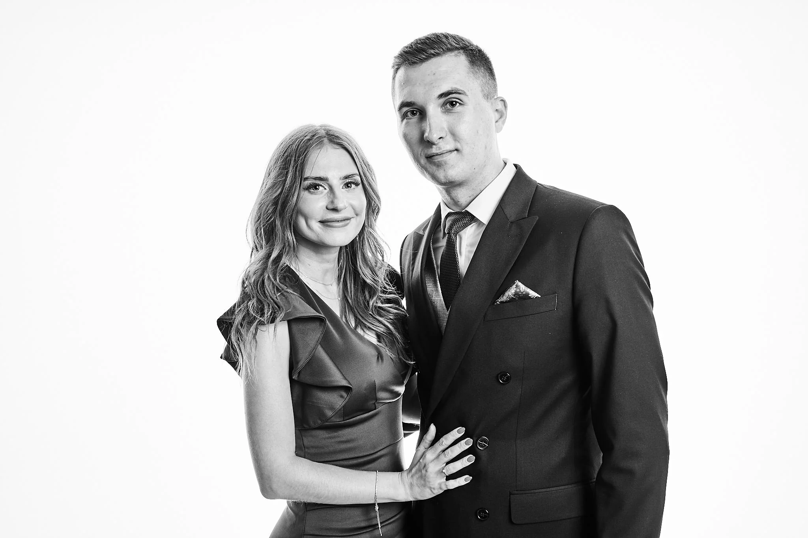
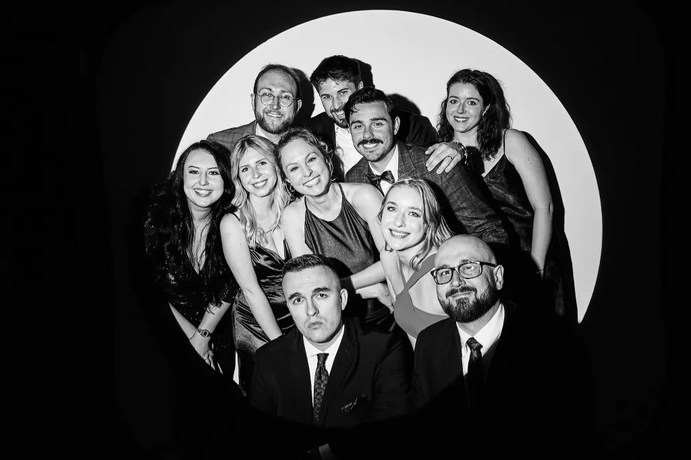
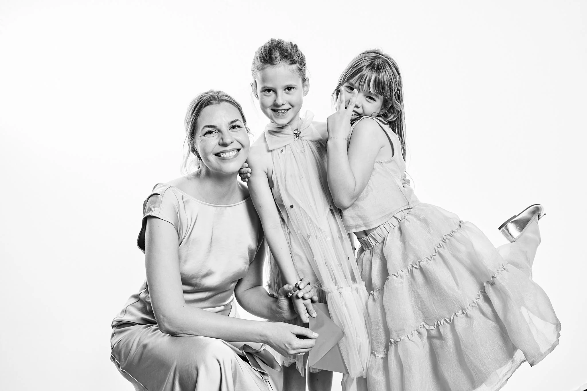
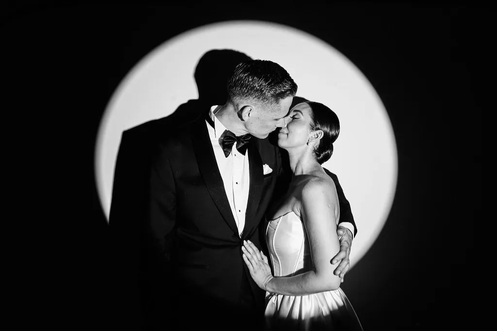
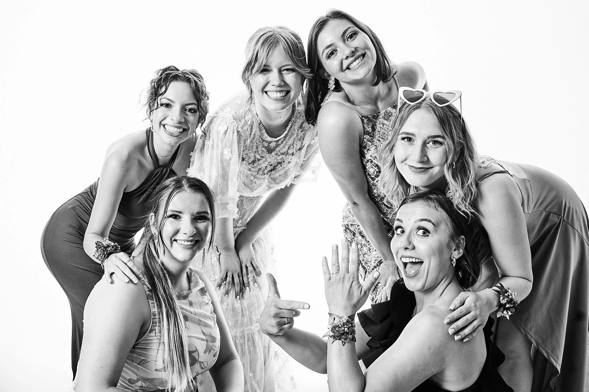
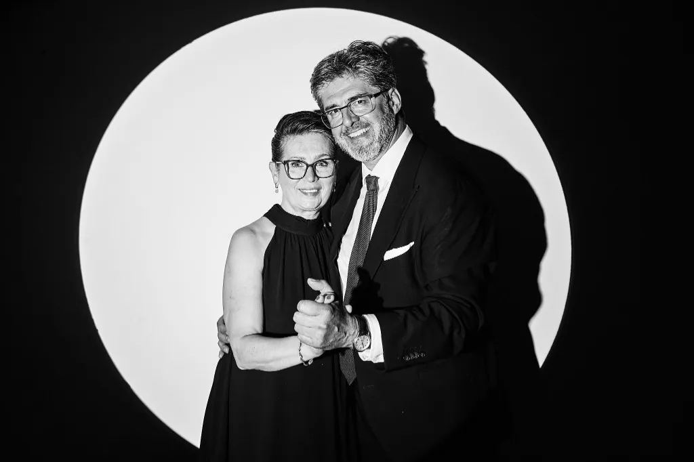
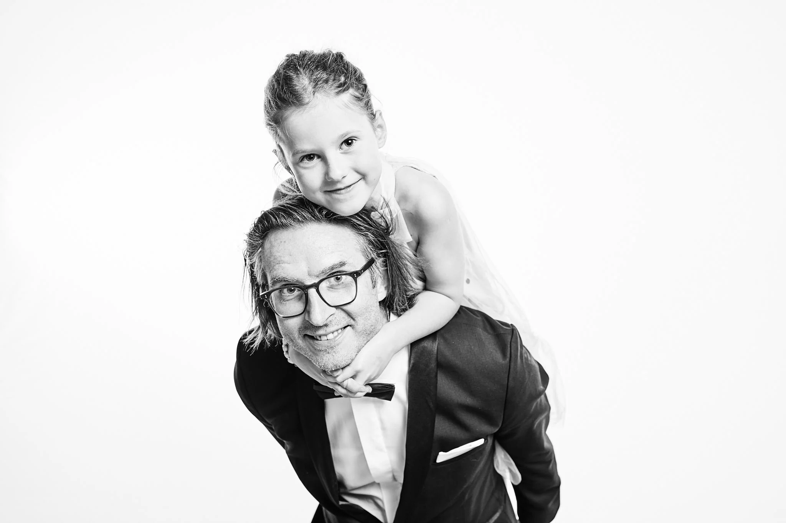
Krok po kroku
Jeden fotograf pomaga gościom w pozowaniu i wykonuje zdjęcia. Drugi obrabia fotografie, drukuje je i obsługuje tablet z księgą gości. Dzięki temu wszystko działa sprawnie i bez długich kolejek.
Aparat jest połączony z komputerem. Gotowy portret trafia do obróbki, chmury i drukarki w ciągu kilku minut. Każdy gość otrzymuje odbitkę w formacie 10×15 cm.
Goście wpisują życzenia rysikiem na tablecie. Po weselu składamy zdjęcia i wpisy w elegancką, minimalistyczną księgę, gotową w ciągu maksymalnie 30 dni roboczych.
Podobne, a jednak inne
To nadal atrakcja z portretem „wywołanym” na żywo, ale efekt i całe doświadczenie są zupełnie inne.
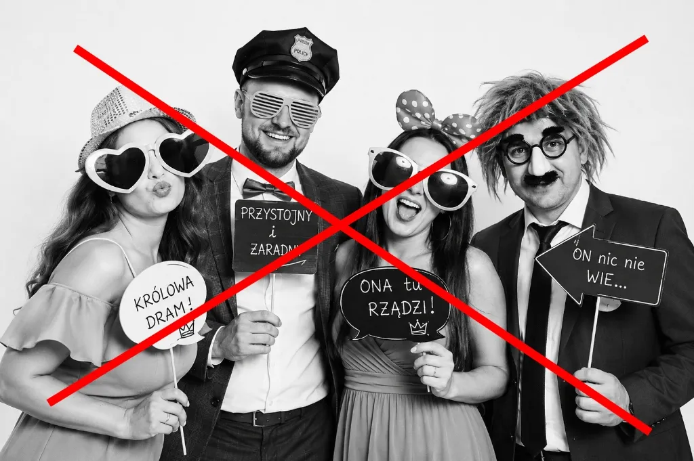
Cennik
Oba pakiety obejmują profesjonalne stanowisko, dwóch fotografów i 3 godziny pracy.
2 900 zł
Najważniejsze elementy Fotostacji w kompletnej, prostej formie.
3 600 zł
Pełne doświadczenie bez liczenia wydruków, z gotową księgą gości.
*Jeżeli zasięg i prędkość internetu na sali pozwalają na przesyłanie plików.
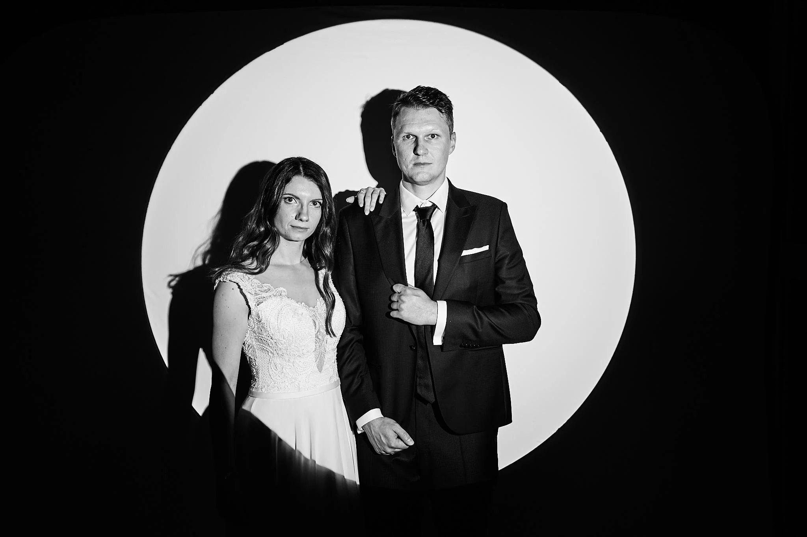
Opcja dodatkowa
Portrety w charakterystycznym, ciemnym kole, inspirowane kadrami z kina. Skupiają uwagę na twarzy i dodają galerii artystycznego, wyrazistego charakteru.
Możemy wykonać je jako część podstawowych 3 godzin albo wydłużyć pracę o dodatkową godzinę. Zmiana oświetlenia zajmuje około 10 minut.
+500 złOpcja dodatkowa
Minimalistyczny album, w którym obok zdjęć z Fotostacji znajdują się odręczne wpisy Waszych gości. Życzenia powstają na iPadzie od razu po wykonaniu zdjęcia, a po przyjęciu składamy wszystko w profesjonalny album 30×30 cm.
Czas realizacji: do 30 dni roboczych.
+600 zł (w standardzie pakietu Exclusive)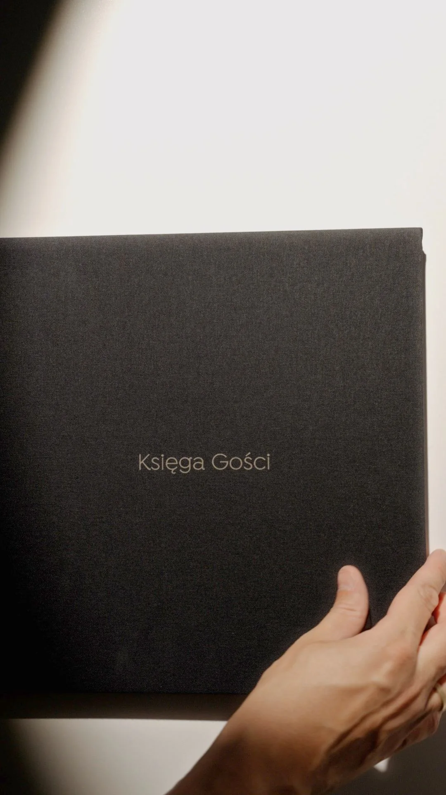
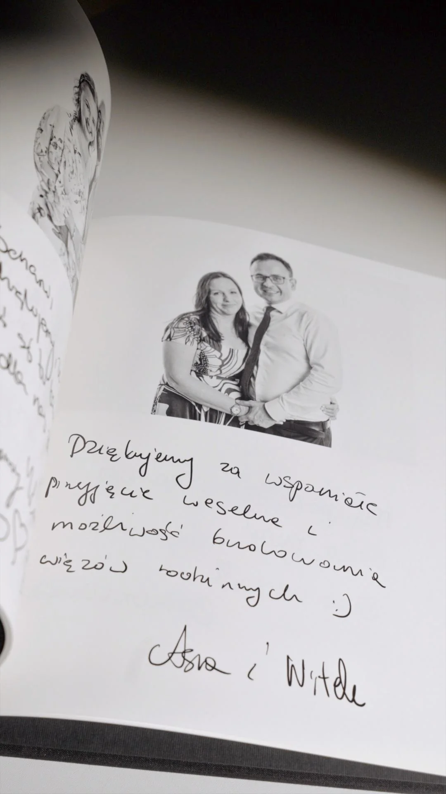
Dodatkowe opcje
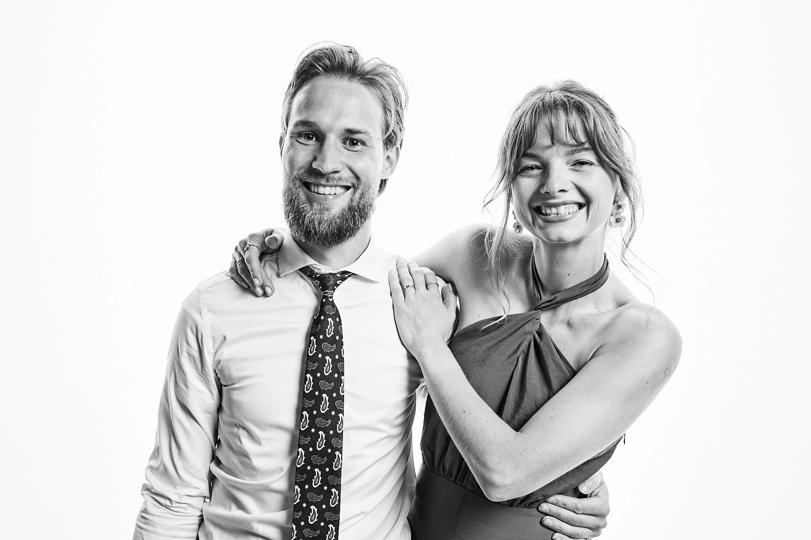
Prezentowane pakiety zostały przygotowane z myślą o przyjęciach liczących do 200 gości. W przypadku większych wydarzeń prosimy o bezpośredni kontakt – aby zapewnić każdemu gościowi najwyższą jakość i zniwelować kolejki do zdjęć, potrzebujemy odpowiednio wydłużyć czas naszej pracy oraz zaangażować dodatkowe osoby do obsługi Fotostacji. Z przyjemnością przygotujemy dla Was ofertę indywidualną.
Sprawdź czy dojedziemy do Was
Portrety realizujemy najczęściej na południu i w centrum Polski — dojeżdżamy na przyjęcia do ok. 300 km od Gliwic.
Odwiedzamy regularnie takie miasta jak Wrocław, Kraków czy Warszawa. Niezależnie od lokalizacji, całe studio i sprzęt przywozimy ze sobą, potrzebujemy jedynie gniazdka z prądem oraz ok. 4×4 metry przestrzeni.
FAQ
Nie. Fotostacja skupia się na gościach solo, w parach lub grupach 3-4 osób. Klasyczne zdjęcia grupowe z parą młodą wykonuje zwykle fotograf odpowiedzialny za reportaż, choć oczywiście para może także podejść do Fotostacji.
W żadnym przypadku. Fotostacja jest dodatkową atrakcją i działa w wydzielonym miejscu, bez odbierania pracy fotografowi reportażowemu. Sami realizujemy reportaże ślubne i dobrze znamy ten rytm pracy.
Portrety edytujemy na miejscu. Od naciśnięcia migawki do pojawienia się gotowego zdjęcia w chmurze i drukarce mija zwykle kilka minut.
Dopasujemy się do harmonogramu wesela. Z naszego doświadczenia najlepszym momentem jest czas po pierwszym bloku tanecznym.
Z racji tego, że nasza usługa trwa 3 godziny, mamy zasadę, że dojeżdżamy do sal weselnych oddalonych o maksymalnie 3 godziny drogi (ok. 300 km). Naszą bazą są Gliwice, więc nasz zasięg działania obejmuje m.in. cały Górny Śląsk, a także Wrocław, Opole, Częstochowę, Kraków czy Warszawę.
To bardzo ważne pytanie! Aby swobodnie pracować, potrzebujemy pustej przestrzeni o wymiarach minimum 4×4 m. Warto wcześniej zapytać Waszą salę, czy dysponuje takim miejscem. Uwaga: sale weselne często mylą nas z klasyczną fotobudką. W rzeczywistości potrzebujemy od niej nieco więcej miejsca :)
Co teraz?
Liczba realizacji jest ograniczona, a terminy szybko się zapełniają. Wyślijcie krótkie zapytanie - sprawdzimy datę i odezwiemy się mailowo.
Pobierz ofertę w PDFInstagram: @sobotki.portraits · E-mail: kontakt@sobotkiweddings.pl
Zapytanie o termin
Możecie zaznaczyć pakiet oraz dowolne dodatki. Do maila dołączymy wszystkie dane z formularza.